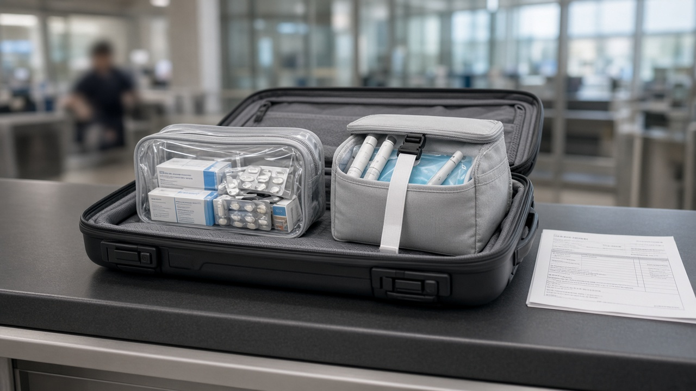
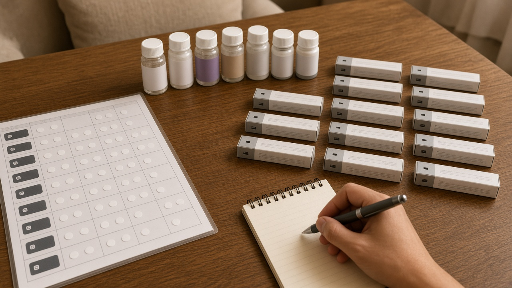
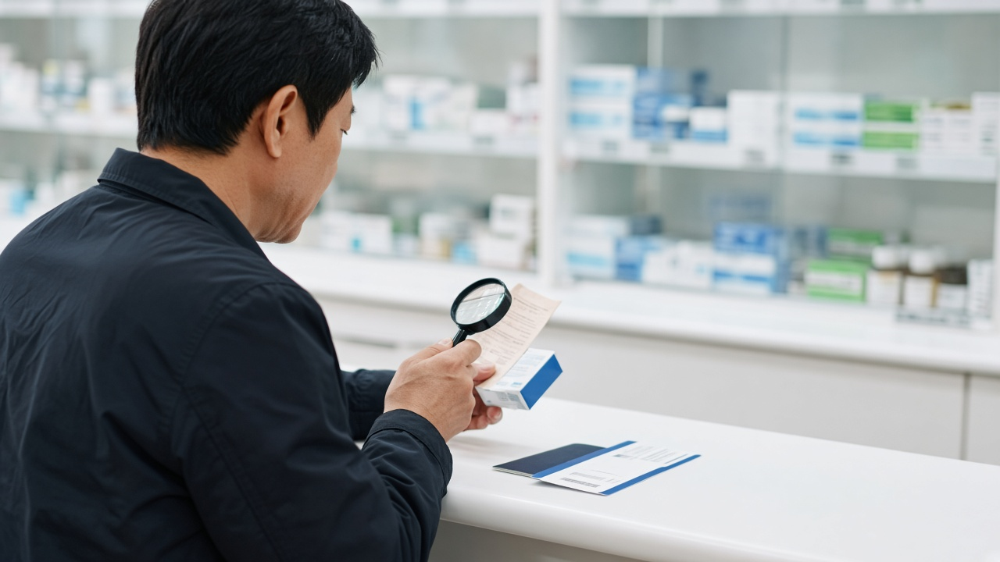

해외에서 처방받은 비만치료제 들고 입국해도 될까, 11월 12일부터 6병 또는 3개월치까지 휴대 반입 기준

해외 출장이나 여행 중에 현지 병원에서 약을 처방받았거나, 평소 먹던 약을 넉넉히 챙겨 나갔다가 남은 약을 다시 들고 들어와야 할 때가 있죠.
그동안은 정식으로 처방받아 산 약인데도 입국할 때 세관에서 통관이 보류돼 곤란했다는 이야기가 꽤 많았어요.
식품의약품안전처와 관세청이 이 불편을 줄이려고 11월 12일부터 자가 치료용 의약품의 개인 휴대 반입을 허용하기로 했어요.
얼마나 들고 올 수 있는지, 어떤 경우가 해당되는지, 여전히 막혀 있는 건 무엇인지 차례로 정리해 볼게요.
11월 12일부터 무엇이 달라졌는지
핵심은 정상적으로 처방받거나 구매한 본인 치료용 약이라면 입국할 때 직접 들고 들어올 수 있게 됐다는 점이에요.
조건은 그 나라의 정상 의료체계에 따라, 그 나라 의약품 규제기관에서 정식 허가를 받은 의약품을 처방받거나 구매한 경우예요.
식약처는 국내나 해외에서 정상 처방을 받아 산 약인데도 입국 때 통관이 보류되는 문제가 계속 제기돼 관세청과 협의해 개선 방안을 마련했다고 밝혔어요.
특히 위고비나 마운자로 같은 비만치료제도 이번 조치로 개인 휴대 반입이 가능해졌다는 점이 많은 관심을 받고 있어요.
보도에 따르면 이 약들은 예전에 제품명이 특정돼 관세청에 유해 의약품으로 통보된 뒤로 정식 처방을 받은 경우까지 한꺼번에 막혀 왔다고 해요.

얼마까지 들고 올 수 있는지
반입할 수 있는 양은 기본적으로 모두 합쳐 6병까지예요.
6병을 넘는 경우에는 그 약의 용법에 따라 3개월 동안 복용하는 양까지 허용돼요.
식약처가 든 예시를 보면, 1주에 한 번 1개씩 스스로 주사하는 GLP1 계열 약은 3개월 복용량인 12개까지 들고 올 수 있어요.
그러니 약을 챙길 때는 병 수만 세지 말고, 처방받은 용법대로 계산했을 때 몇 달치인지도 함께 따져 보시는 게 좋아요.
관세청의 자가사용 인정기준에도 의약품은 총 6병, 6병을 넘으면 용법상 3개월 복용량으로 적혀 있어서 같은 기준이 적용된다고 보시면 돼요.
어떤 경우가 해당되는지
식약처가 밝힌 주요 유형은 크게 세 가지예요.
먼저 국내에서 복용하던 약을 들고 출국했다가 남은 약을 다시 들고 들어오는 경우예요.
다음으로 외국인이나 유학생처럼 해외에 머물면서 복용하던 약을 국내로 가지고 들어오는 경우가 있어요.
마지막으로 해외여행 중에 현지에서 처방받거나 구매한 약을 가지고 들어오는 경우도 포함돼요.
어느 경우든 정상 처방이나 정식 구매라는 점이 중요하니까, 처방전이나 구매 영수증, 약 포장과 설명서를 버리지 말고 함께 챙겨 두시면 세관에서 설명하기 훨씬 수월해요.

여전히 막혀 있는 것도 있어요
이번 조치가 모든 약을 자유롭게 들여와도 된다는 뜻은 아니에요.
마약류나 향정신성의약품 성분이 든 약은 기존처럼 반입이 제한돼요.
관세청은 해외에서 파는 약이나 국내 병원에서 처방받은 약이라도 마약류 성분이 들어 있으면 마약류 관리에 관한 법률에 따라 처벌받을 수 있다고 안내하고 있어요.
감기약, 수면제, 다이어트약 가운데 이런 성분이 든 경우가 있으니 성분표를 꼭 확인해야 해요.
마약류 성분 약을 치료 목적으로 꼭 가지고 다녀야 한다면 의약품안전나라 전자민원에서 식약처장의 휴대 출입국 승인을 미리 받아야 해요.
또 이번 허용은 본인이 직접 들고 오는 휴대 반입에 대한 것이라서, 해외 직접구매나 국제우편으로 받는 방식은 포함되지 않는다고 보도됐어요.
출국 전에 챙겨 둘 것
해외에서 약을 처방받을 계획이라면, 그 약이 그 나라에서 정식 허가된 약인지와 국내에서 마약류로 분류되는 성분이 없는지부터 확인해 두세요.
주사형 약은 보관 온도가 중요할 수 있으니 이동하는 동안 어떻게 보관할지도 미리 생각해 두시는 게 좋아요.
비만치료제처럼 관심이 많은 약은 해외 원정 처방이 늘면서 오남용 우려도 함께 나오고 있어요.
가격만 보고 결정하기보다는 지금 몸 상태와 복용 이력을 아는 의사와 먼저 상담하고, 부작용이 생겼을 때 국내에서 어떻게 진료받을지도 함께 정해 두세요.
기준이 헷갈릴 때는 출국 전에 관세청이나 식약처 안내를 한 번 더 확인하는 게 가장 확실한 방법이에요.
참고 자료 식품의약품안전처와 관세청 2026년 11월 11일 보도자료 자가 치료용 의약품 개인 휴대 반입 허용, 공공보건포털 e보건소 11월 12일 안내, 관세청 자가사용 인정기준과 마약성분 함유 의약품 주의사항, 연합뉴스 11월 11일 비만약 등 치료용 의약품 12일부터 해외서 휴대 반입 허용, 일간투데이 11월 12일 보도
태그 의약품휴대반입 자가치료용의약품 비만치료제반입 위고비 마운자로 해외처방약 입국약반입 식약처 관세청 여행상비약